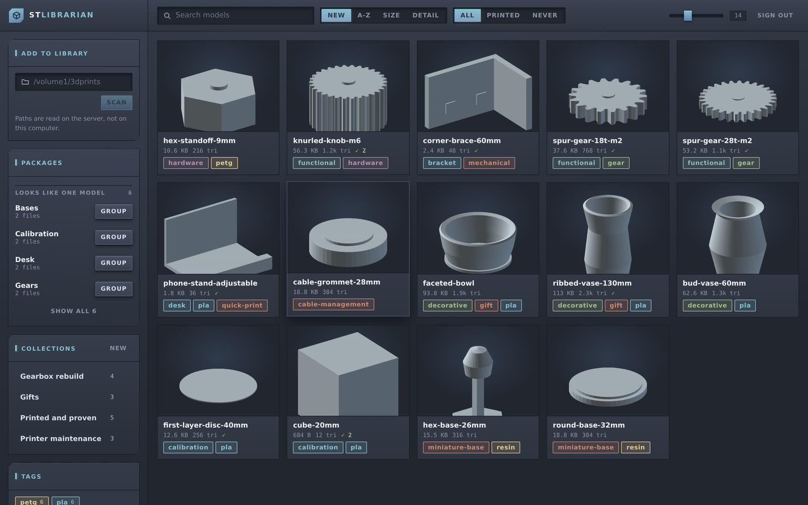
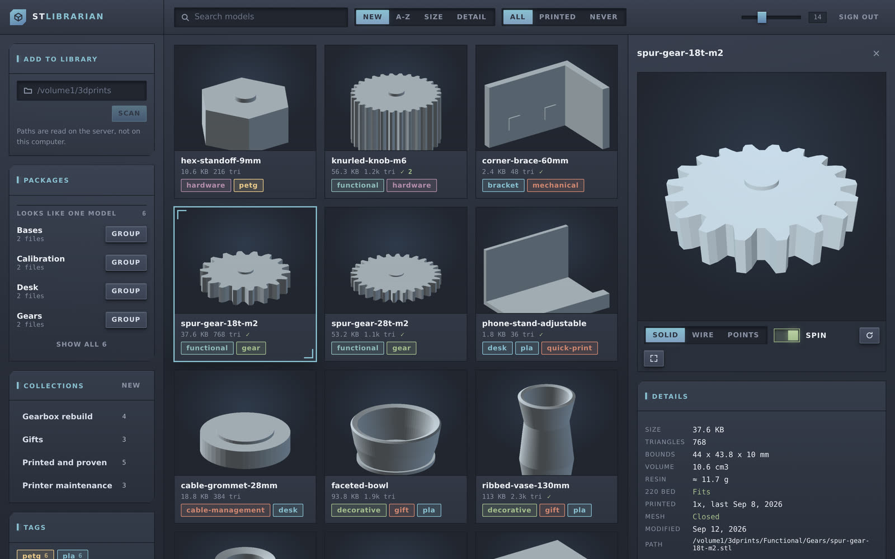
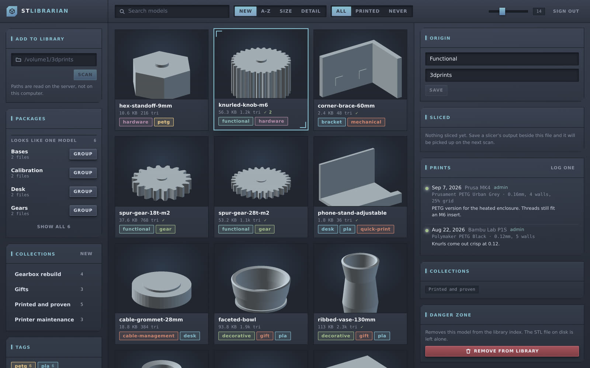

XYZ cube · 20 mm
A media library for 3D printing
You have gigabytes of STLs and no idea what is in them. STLibrarian scans the pile, renders every model, groups the parts that belong together, and remembers what you printed.
Free. Runs on your own machine · no account, no server, nothing to sign up for
Test gear · 12 teeth
The problem
I know I bought this one.Search, by name or tag
Which of these four files is the body?Parts grouped as one model
Have I printed this before?Print history, per model
Why is this drive full?Duplicates, found by content
What it does
Nothing is moved, renamed or deleted. Scanning reads your files and writes only to its own database, so your folders stay exactly as you left them.
Drawn on the machine holding the library, with no GPU and no browser needed. A three million triangle mini takes about two and a half seconds, at full detail.
Bounding box, triangle count and enclosed volume. Volume becomes grams of resin, and if the mesh has holes it says so instead of quoting a number it invented.
Four files that are one dragon become one model. Supported and unsupported copies are recognised as the same thing. It proposes; you decide.
Printer, material, settings, outcome. Failures included, because how many attempts it took is the interesting part.
Save your slicer's output beside the model. Layer height, time and material are read from it, and a print record points at the file that ran.
Open any model in whatever handles it on your machine, including when the library lives on a NAS across the room.
What it looks like
What you own down the left, the models in the middle, and everything known about one of them on the right. Nothing below is a mockup: it is the application, rendering its own measurements of real meshes.



Shown running as the shared server, which is why there is a sign-out button — the desktop app is the same front end, built from the same source. The library in the shots is a generated sample, so nobody else's models are on display.
Two ways to run it
FreeMac, Windows and Linux
Free while testingA one-time $19.99 for forever updates when it ships
From people running it
The app asks once, after you have a library worth having an opinion about. Every review here was read by a person first, and only appears because whoever wrote it said it could.
Download
It reads the folders you already have and writes nothing to them. No server, no account, nothing to administer. Open it, point it at your models, done.
Free, and free to keep. No account, no telemetry.
All three buttons open the same releases page, where you pick the file for your machine. Filenames carry the version number, so there is no fixed link to a particular installer that would keep working from one release to the next.
macOS. These builds are not notarized yet, so the first launch needs a right click and Open instead of a double click. After that it opens normally.
Windows. Unsigned, so SmartScreen will warn: More info, then Run anyway. An OV certificate would not silence that warning, and the EV kind earns its reputation over time rather than buying it, so there is nothing to buy that would help yet.
Linux. The AppImage has to be made executable before it will start: chmod +x it and run it. The .deb and .rpm need no such thing.
Docs
Everything you tell STLibrarian lives in a single SQLite file: tags, packages, collections, print history, every correction you made by hand. Your models stay where you keep them and are never copied into it.
| Platform | Folder |
|---|---|
| macOS | ~/Library/Application Support/STLibrarian/ |
| Linux | ~/.local/share/STLibrarian/ |
| Windows | %APPDATA%\STLibrarian\ |
| Anywhere | STLIBRARIAN_DATA_DIR overrides all of the above |
That is the whole library. The thumbnails/ folder beside it is drawn from your models and rebuilds itself, so skipping it costs nothing but time.
Or copy stl.db-wal and stl.db-shm with it. Those hold writes not yet folded into the main file, and a copy without them can be a moment stale.
If your models ended up somewhere else, the library will say so rather than looking empty, and it can go and find them.
A restore onto a different machine, a library moved to a bigger disk, a share remounted somewhere else: every stored path is wrong at once. Nothing is deleted for being missing, because an unplugged drive must not empty your library. Instead Missing files appears in the sidebar.
Point it at wherever the models are now and it matches them by content, so renames and reorganised folders make no difference. It only opens files whose size already matches something missing, so it is not re-reading your whole collection to find a few strays.
For what searching cannot reach, such as a model re-exported at a different resolution or a mesh you repaired, Locate points one model at one file by hand. The entry is then re-measured from that file, so its triangle count and volume describe what is actually there.
Optional
Sharing one collection between several people? The same library runs on a NAS and serves everyone a browser. In testing, and free while it is.
# Build the web front end, then start the server yarn install && yarn build cd src-tauri cargo run --release --no-default-features \ --features server --bin stlibrarian-server # An administrator password is printed once, on first start. # Then open http://your-nas:3000